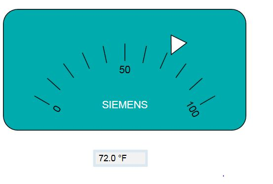
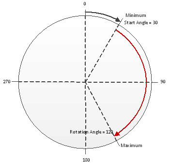
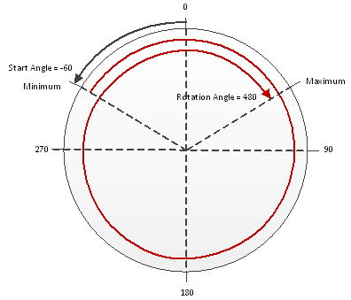
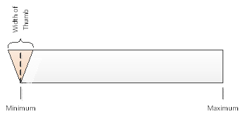
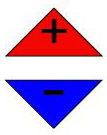
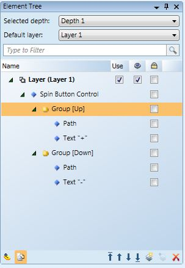

Command Control Elements and Symbols
There are seven command controls that enable you to send a command from a graphic on the canvas. However, any element can also be configured to send a command. A command element or symbol allows you to send commands from within a graphic.
Command Control Symbols
A command element or symbol allows you to send commands from within a graphic. The commands are initiated by either clicking on the command control element or symbol in response to parameter values entered into the element or the symbol on the graphic. The symbol represents a command on the graphic. Instead of configuring commands for each data point on a graphic, a symbol can be created that represents a command. This symbol is dropped when dragging a data point from the System Browser onto a graphic. The symbol is marked as Command Control when it is associated with a Model or Function.
Creating a Command Symbol
A librarian creates a command symbol by configuring command control elements.
In the Models and Functions tab, the librarian indicates which symbol functions as the command symbol. Each style associated with a symbol, can have two default symbols: a regular symbol and a command symbol.
Dropdown Command
The Dropdown command control allows you to change a enumeration value, such as the Units property or a Binary Value. You create the Dropdown command control in the Graphics Editor.
Numeric Command
The Numeric command control allows you to change an analog value. You create the Numeric command control in the Graphics Editor.
Password Command
The Password command control allows you to command properties that require Password parameters, such as Cool Start and Disabling a Panel. You create the Password command control in the Graphics Editor.
Rotator Command
The Rotator command control allows you to view and change an analog value in a rotational motion. The Rotator command control does not have a visual component; the frame; therefore, tick marks, and the Rotator thumb must be drawn separately.
Rotator Example
The illustration below is a visual example of a Rotator command control. The tick marks, the Rotator thumb, the text and the rectangle are all created separately.

Thumb Calculations
The pivot point of the Rotator thumb is determined by its Angle Center X and Angle Center Y property values.
Rotator Properties: Calculating Minimum, Maximum, Start and Rotation Angle
The following drawing shows how the Minimum and the Maximum property values of the Rotator command are placed in conjunction with the Start Angle and Rotational Angle for a total of less than 360 degrees, that is, less than one rotation.

In the illustration below, the Rotation Angle is set greater than 360 degrees and the thumb can make multiple rotations.

Slider Command
The Slider command control allows you to view and change an analog value in a linear, sliding motion. The Slider command control only has a background visual component; therefore, once configured, the frame and the tick marks must be drawn separately.
Slider Example
The illustration below is an example of a Slider command and displays the Minimum and Maximum properties and how the thumb lines up with the slider in regards to the width of the thumb.
The thumb and the tick marks are not a part of the Slider command, and are drawn separately.

Spin Button Command
The Spin Button command control allows you to view and change an analog value with two buttons, for example “up” and “down” that increase or decrease the value by a set increment. The Spin Button command control does not have a visual component; therefore, the Up and Down thumbs must be drawn separately.
A Spin Button command control is created by using two path elements; one is grouped with + text element, and the other with the - text element.

The element tree below illustrates how the above Spin Button command control looks in the Element Tree.

String Command
The String command control allows you to view and change the value of data points with string value data types. The Description property of a data point is a good example for using a String command control.